译文｜二维码要怎么读？
你有没有好奇过，二维码到底是怎么个原理？笔者以前也没想过，但其实，二维码的工作原理，可谓是「低调奢华有内涵。」（⚠️ 注意，以下内容高度专业。👇）
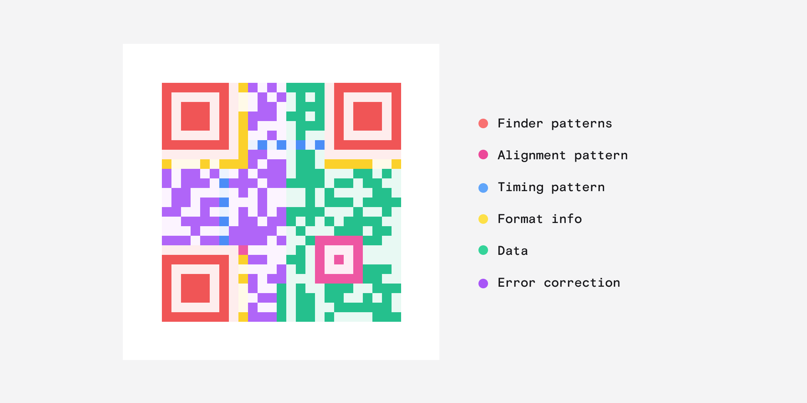
二维码1是由丰田旗下一家子公司研制的，目的是在制造流程中对零部件进行追踪。传统的条形码只能以特定角度读取，且占用面积大而储存信息少，因而在这一使用场景下难以胜任。二维码的出现，不仅解决了这两大问题，还带来了更多好处。
二维码最具辨识度的，就是里面的这几个方形图案。这几个方块叫「定位图案」（finder pattern），用以帮助扫码器检测二维码。除了三个大方块，还有一个较小的方块，称为「对齐图案」（alignment pattern），表明二维码的方向，这样一来，无论二维码倾斜成什么角度，扫码器都能分清二维码的上下左右。
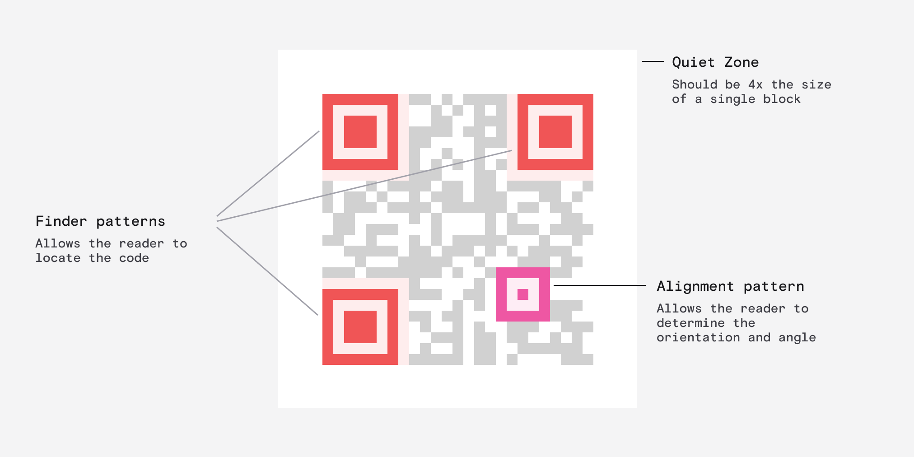
有一点你可能永远也不会发现，那就是每个二维码上，都有下图这样交替出现的黑白点，它们组合在一起，称为「定时图案」（timing pattern）。
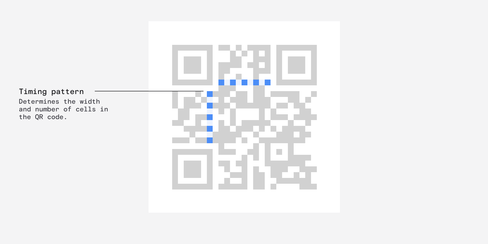
定时图案的作用，是告诉扫码器每个条码单元有多大，以及整个二维码有多大——也即二维码的「版本」，最小的是版本 1，最大的是版本 40。
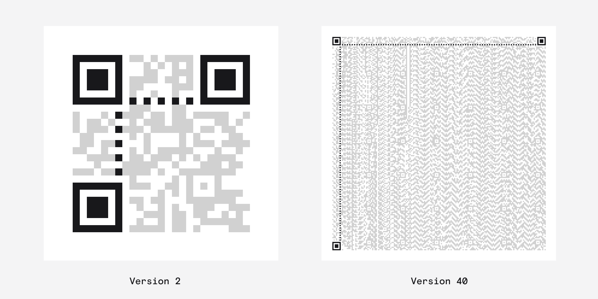
定位图案附近的这两个黄色点带，储存着二维码的格式信息。两条交错的条带完全一致，意味着格式信息存储了两次，即便二维码被部分遮盖，格式信息也能顺利读取。（继续读下去，你会发现「避免部分遮盖」是二维码设计中永恒的主题。）
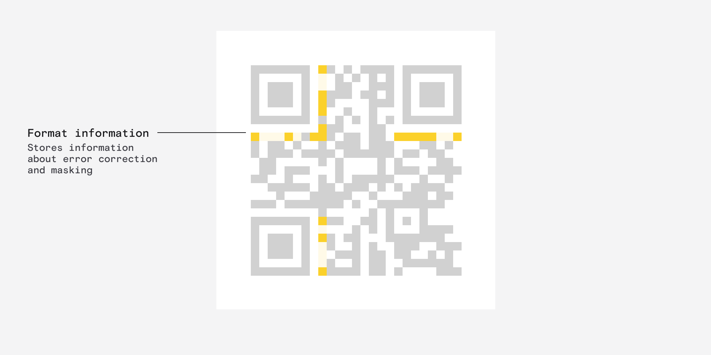
格式信息包括掩码（mask）、纠错级别、纠错格式等关键信息。听上去巨无聊是吧？但其实还都挺有意思的。
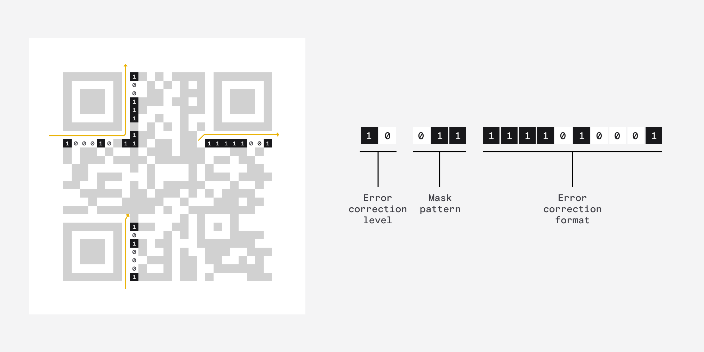
第一个问题，在二维码上，什么是纠错？本质上讲，纠错指的就是二维码里储存了多少冗余信息，确保二维码即便部分缺失也能正常读取。
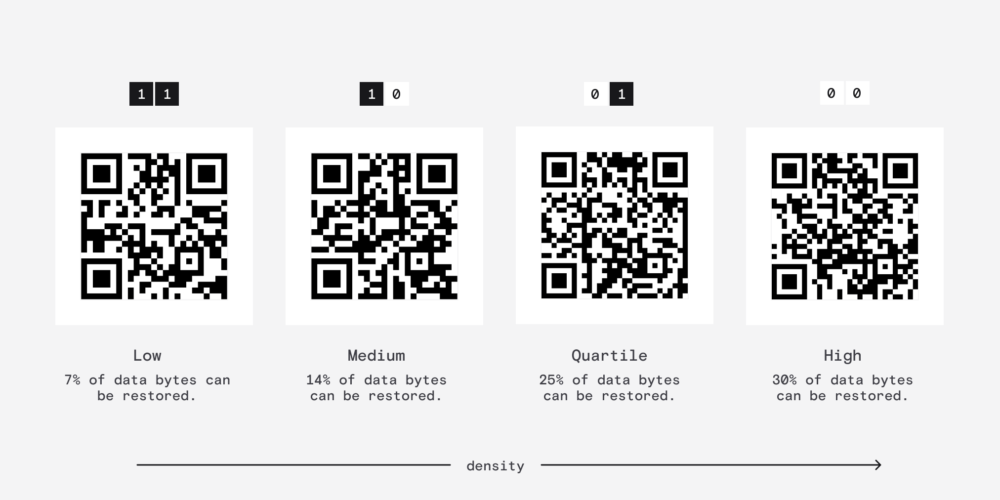
这一设计的成功之处在于，如果二维码是在户外使用，那么可以选择较高的冗余级别，确保二维码即便少了一部分也能正常生效。（扫扫看！）
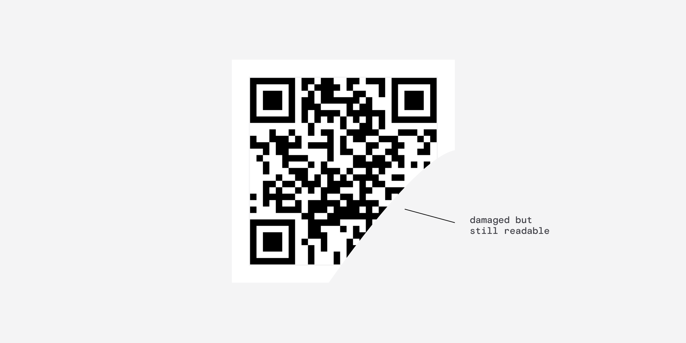
第二个问题，什么是掩码？简单来说，当二维码上黑白点的数量相同，扫码器读码的效果最好。但有时候，二维码上存储的数据就是不配合，这时就要用到掩码，来让黑白点尽可能均匀分布。
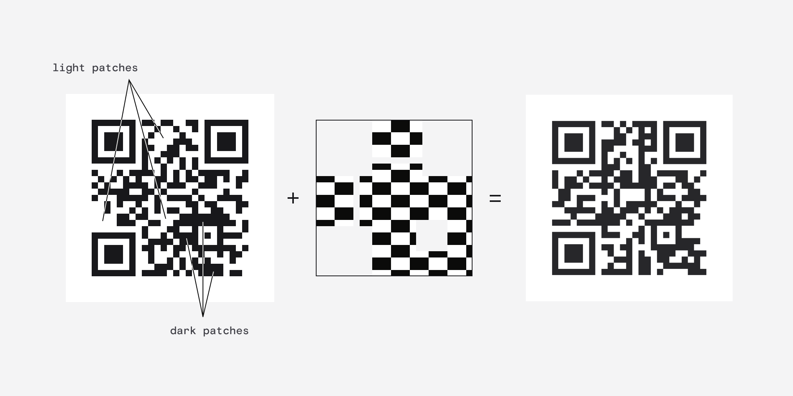
应用掩码后，被掩码黑色部分遮盖的区域会反色，白色变黑，黑色变白。

掩码共有八种样式，编码时会逐一应用，最后选用效果最佳的掩码，并将掩码类型储存在二维码中，这样扫码器读码时就能识别并取消掩码了。
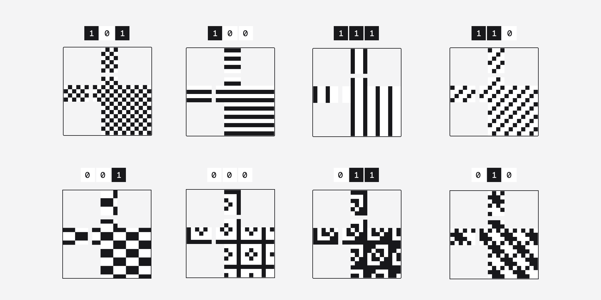
最后，就是实际数据部分了。比较古怪的一点是，数据部分是从二维码的右下角开始，迂回编码的，如下图所示。但数据从哪里开始其实并不重要，因为二维码可以在任意倾斜角度下读取。
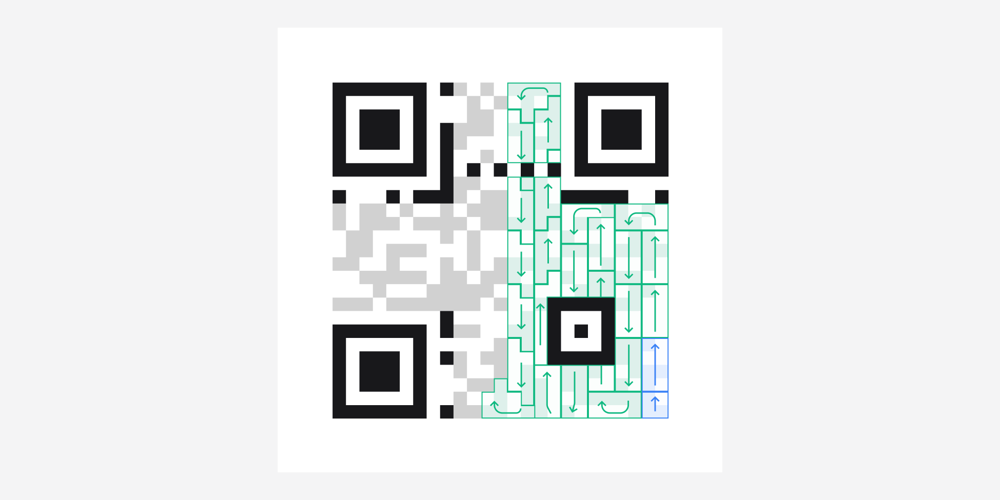
来看右下角，数据部分之前有两个蓝色信息块，分别记录数据的编码方式和总长度。在这个二维码中，每个字符占据一个 8 位（即 1 字节）的编码块，共有 24 个编码块。
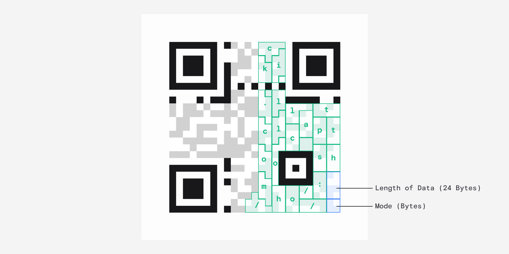
数据部分结束后，二维码上还有很多没利用到的地方。这里存储的就是纠错信息，这样二维码即便有污损也能正常读取。但纠错的原理太过复杂，本文就不详述了。
这样一分析，二维码就好理解了吧？既然都读到这里了，就再来点更硬核的东西吧。二维码最传奇的地方就在于，发明二维码的电装公司（Denso Wave）从来没有行使过二维码的专利权，而是将其免费开放给了所有人。
关于二维码的发明背景，电装公司有一篇 文章 简述，以后有机会了或许也可以翻译出来。
我已开通 Telegram 频道：本夜朽舎，也开通了同名 newsletter，希望多多订阅。欢迎将您的想法、评论、意见、建议发送至 harveyjanson@icloud.com，请注明「讨论」字样，我会尽量回复。
- 1.所谓「二维码」，指长度、宽度均存储信息的条码，分不同种类。大陆 / 内地中文语境下，「二维码」普遍指英文全称为 quick response code（快速响应码，或 QR 码）的类型，也即本文讨论的对象。译文为照顾大陆 / 内地阅读习惯，将 QR code 统一译为「二维码」。 ↩